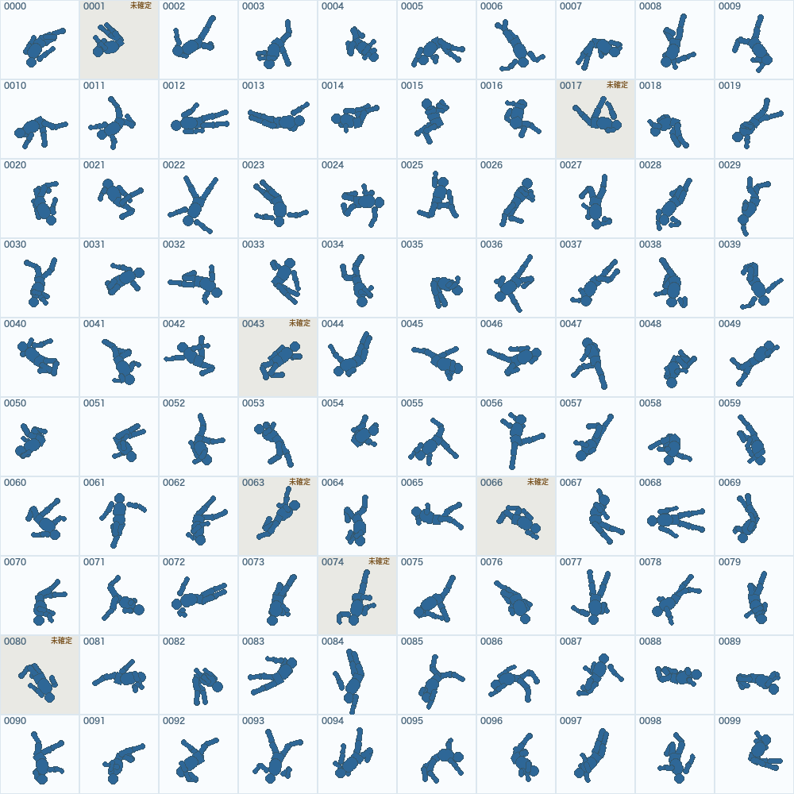
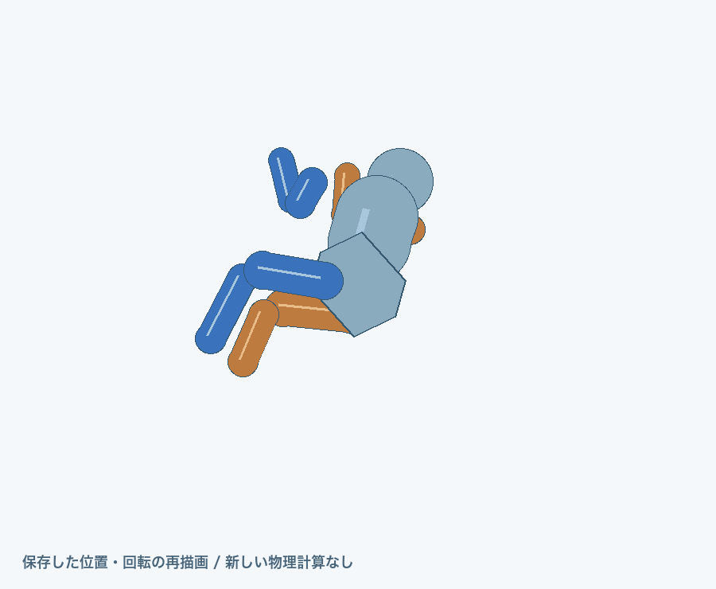
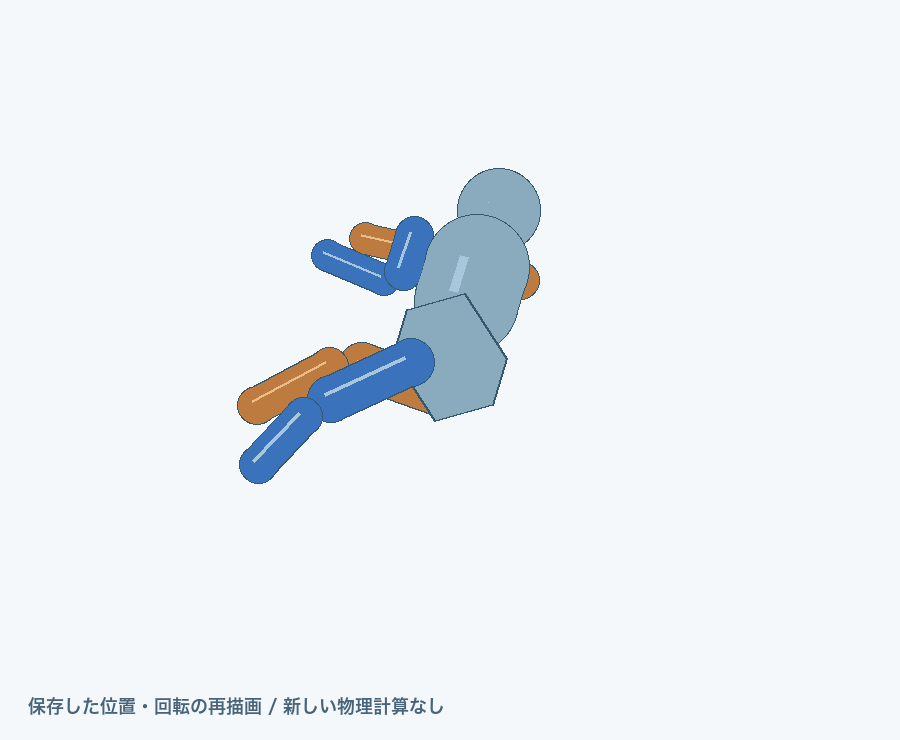

QualifiedSettled
判定可能な静止
6,569件
姿勢を評価できた記録。確認済みの成功は0件でした。
RAGDOLL RESEARCH / 保存記録から読む
「ヤムチャの倒れたポーズが偶然に現れるのか」という発想から始めた研究です。関節でつないだ汎用模型で調べたV9の6,900件を、似ていた形も、判定できなかった記録も、分けて残しました。
今回の結論 確認済みの成功は0件。
ただし「絶対に起こらない」とは言えません。
追加の物理試行は終了。計画10,000件は未完了のままです。

研究の問い
11の剛体（変形しない部品）を関節でつないだ模型に、一定のルールで力を加えます。初期の位置や向きが変わると、飛び方・倒れ方・最後の姿勢がどう変わるかを調べました。
V9では、保存した全身の参照姿勢を固定しました。位置、関節の回転、胴体の向き、部位間の形を数値で比較。見た目だけでなく、静止や向きの条件も確認します。
原作キャラクターや現実の人体の再現ではありません。身長・質量・形状は模型の仮定です。人体の損傷、実際の衝撃波、現実世界での発生確率は測っていません。
V9 / 現在の結果
記録の整理基準日
計画10,000件のうち6,900件を記録。残り3,100件は実行していません。未確定を失敗や0点に置き換えず、分けて表示します。
QualifiedSettled
6,569件
姿勢を評価できた記録。確認済みの成功は0件でした。
UnresolvedBudget
317件
計算の上限で結論が出なかった記録。点数・成功判定は未確定です。
QualityReview
14件
品質上の確認を要する記録。失敗として集計していません。
未確定は計331件。 0点でも、成功でも、失敗でもありません。配布CSVの空欄とJSONのnullは、この未確定を表しています。
姿勢の類似度
数値は形の近さを表す姿勢類似度。82%は成功判定で使う点数の閾値で、「82%の確率で起こる」という意味ではありません。
対象：判定可能な6,569件のみ。95パーセンタイルは、記録の95%がその値以下にある境目です。
| 類似度 | 件数 |
|---|
最高例 / trial 2613
seed 3465339881。右前腕の関節角の差は約99.2°で、上限75°を超えました。全体の点数だけでなく、各部位や向きの条件を同時に満たす必要があります。
右前腕の関節角差99.2°判定上限 75°
上位表は判定可能な記録の類似度順です。seedは入力を識別するための乱数の出発点で、seedだけでモデルや設定を再現できるわけではありません。
| 順位 | trial | seed | 類似度 | 状態 |
|---|
一致するtrial・seedはありません。
保存した形を、いろいろな角度から
左はV9の保存参照、右は最高非一致例。どちらも保存した姿勢で、新しい実験や動作シミュレーションではありません。動かすのはカメラだけです。
青い人体CGは、同じ11剛体の位置・回転に、手・足・表面を重ねた表示専用の模型です。外見と接触計算の形状は別なので、検査用のCollider表示にも切り替えられます。手足の装飾は、測定された身体部位や地面との接触を示すものではありません。


ドラッグ・タッチで回転。キーボードは矢印キー、＋／−、Home。ピンチまたは拡大スライダーでズーム。両模型は共通のカメラ方向・倍率です（各骨盤をカメラの基点にします）。人体CGは全身青色。検査形状では青＝模型の左、橙＝模型の右です。左右を入れ替えたり、姿勢を修正したりしていません。
元のworld位置・Quaternion（3Dの向きを表す数値）・Collider（接触計算に使う形状）から描画します。Unityの座標X,Y,Zは、表示の際にX,Y,−Zへ一度だけ変換。骨盤基準のカメラ移動は、部位の位置・回転やスコアを変えません。地面の見た目から接触品質を判断しないよう、このビューには地形を表示していません。
aa84は固定した参照データのSHA-256先頭です。基準の姿勢は、原作と校正済みの正解でも、どんな条件でも安定して保てるという証拠でもありません。
表示用の保存姿勢データ見る観測ノート
まずは今回の総括と、保存挙動の映像から。過去の解説は当時の条件を残した再編集版です。古い数値や計画を、現在のV9結果に混ぜないでください。
すべてのプレーヤーは初期ミュート・音量0・自動再生なし。音声を聴く場合は、ご自身で音量を上げてください。
研究の歩み
主要3実験系で確認したのべ入力記録は19,900件。これはV5の中断等も含む台帳数で、独立した物理評価数や、再生できる軌道の数ではありません。研究全履歴の総数も意味しません。
初期の20秒期限・旧仮参照によるRecorder映像も残っています。これはV5/V7/V9の主要3系列とは別の履歴です。第2回の適応探索や小さな対照診断とともに、当時の計画・判定ルールを現在の集計へ混ぜずに示します。
旧仮参照での記録。判定可能な非一致9,652、上限による未確定341、中断6、計測エラー1。V9とは参照や条件が違います。
手動の保存配置を使う保持診断へ。初期配置で停止した段階と、その後の13配置＋対照1解放の記録は別です。偶然の発生確率の標本ではありません。
群ごとの非一致は964・964・967件、未確定は36・36・33件。合計3,000入力ですが、群を混ぜた確率は出しません。
aa84保存参照を採用したこのページの主集計。最高47.22%、確認済み成功0。計画10,000件には達していません。
実装・監視を改良しましたが、予定した32件の評価は未開始。OSプロセス監視の問題による停止を、物理現象の失敗とは扱いません。追加試行は行いません。
限界と訂正
有限の、しかも未完了の試行です。未確定な記録もあります。条件を変えた全ての可能性や、現実の人間の動きを否定できません。
QualifiedSettledは終端の直接衝突queryが全て非重なりという条件ではありませんでした。この同一視を訂正します。元の状態区分は変更していません。
全直接queryが非重なりの部分集合は6,569件中331件、最高28.69%。未確定の331件とは別の集合です。最高47.22%例にも床約0.494mm・部位間約0.0278mmのquery深度が残っています。
V9の終端記録は6,900件。一方、全ステップの姿勢を保存した連続軌道はtrial 0の1件だけです。最高例を含む残りは初期・終端・異常時の姿勢と品質要約。未保存区間を生成して実測のようには見せません。
数式上の目標を満たせば、その形が必ず現れるとは限りません。関節や接触、静止、全身の向きは別に確かめる必要があります。V10ではその物理評価にまだ入れていません。
正規化した誤差の重み付き平均を E として、姿勢類似度は S = exp(−E) です。四つの点数を単純に平均する方法ではありません。
E ≈ 0.35 × 位置RMSE / 0.12 + 0.35 × 関節RMSE / 40° + 0.15 × 胴体重力方向誤差 / 45° + 0.15 × 形状RMSE / 0.10
位置・形状は基準長1.83mで正規化されています。係数の厳密値は保存されたfloat値で、式は読みやすい近似表記です。82%には E ≤ 約0.198451 が必要です。全身の静止、最大部位誤差、各面の向き、品質等の別条件も残ります。
最高例の関節角差99.2°は「参照との回転差」であり、肘の曲げ量そのものでも、可動域を99.2°超過したという意味でもありません。
厳密な係数と集計値 JSON根拠とクレジット
集計はV9の凍結済み台帳と、その保存解析から抽出しました。原データの私的な運用情報は配布していません。公開用データには、必要な数値・seed・状態・姿勢だけを含めています。
hashは同じファイルかを確かめる識別値で、測定の正しさや権利の許諾を証明するものではありません。
公式文書は手法の説明です。この研究の実行結果や模型の妥当性を保証するものではありません。
音声：VOICEVOX:ずんだもん
過去の対話解説：VOICEVOX:四国めたん
立ち絵：坂本アヒル
ずんだもんV3.2基本版・通常衣装。対話の四国めたんは同作者2.1素材。
合成音声を使用しています。音声確認の範囲はテキストと波形で、人による聴取承認は行っていません。口の動きは音量同期で、音素同期ではありません。
過去の対話2作品の音楽：“Local Forecast - Elevator” — Kevin MacLeod (incompetech.com) / CC BY 4.0。抜粋、音量調整、ループ接続、ducking、fadeを含む既存mixを継承。
模型・図表は保存数値から作成した汎用primitive表示、または説明用のオリジナル模式図です。漫画・アニメの元画像、原作衣装、原PSD、音声モデルは含めていません。第三者素材の利用条件は、サイトのコードやデータとは別です。